概念
红黑树符合二叉搜索树的基本规则外，还添加了以下特征：
- 节点是红色或黑色
- 根节点是黑色
- 每个叶子节点都是黑色的空节点(NIL节点)
- 每个红色节点的两个子节点都是黑色(从每个叶子到根的所有路径上不能有两个连续的红色节点)
- 从任一节点到其每个叶子的所有路径都包含相同数目的黑色节点
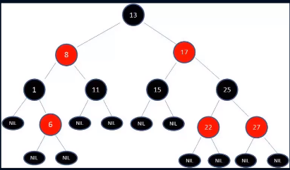
关键特性
- 从根到叶子的最长可能路径，不会超过最短可能路径的两倍长
- 结果就是这个树基本是平衡的
- 虽然没有做到绝对的平衡，但是可以保证在最坏的情况下依然是高效的
为什么可以做到“最长可能路径，不会超过最短可能路径的两倍长”
- 性质4决定了路径不能有两个相连的红色节点
- 最短的可能路径都是黑色节点
- 最长的可能路径是红色和黑色交替
- 性质5所有路径都有相同数目的黑色节点
- 这就表明了没有路径能多余任何其他路径的两倍长
PS:23树和234树可以和红黑树相互转化
红黑树的变换
换色-左旋转-右旋转
插入的新节点通常都是红色的
- 因为插入节点为红色的时候，有可能插入一次是不违反红黑树任何规则
- 而插入黑色节点，必然会导致有一条路径上多了黑色节点，这很难调整
- 红色节点可能导致出现红红相连，但是这种情况可以通过颜色调换和旋转来调整
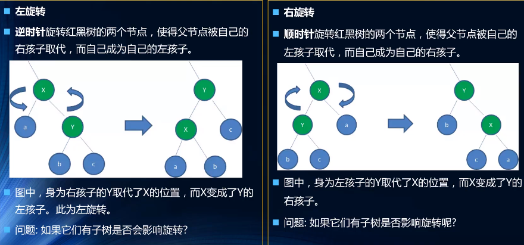
一些插入情况
设要插入的节点为N，其父节点为P，祖父节点为G，父亲的兄弟节点为U(即P和U是同一个节点的子节点)
情况一
新节点N位于树的根上，没有父节点
这种情况我们之间将红色变成黑色即可
情况二
新节点的父节点是黑色
性质4没有失效(新节点是红色的)，性质5也没有任何问题
尽管新节点N有两个黑色的叶子节点nil，但是心节点N是红色的，所以通过它的路径中黑色节点的个数依然相同
情况三
父红叔红祖黑 --变成--> 父黑叔黑祖红
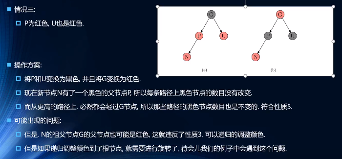
情况四
父红叔黑祖黑 N 是左儿子 --变成--> 父黑祖红右旋转
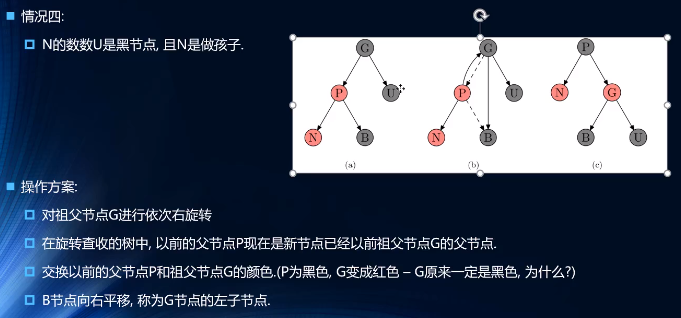
情况五
父红叔黑祖黑，N 是右儿子 --变成--> 以P为根进行左旋转
将 P 作为新插入的红色节点考虑即可
自己变成黑色 --> 组变红 --> 祖为根进行右旋转
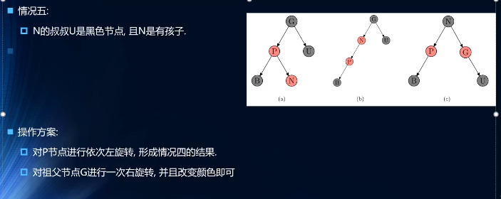
案列
依次插入 10 9 8 7 6 5 4 3 2 1
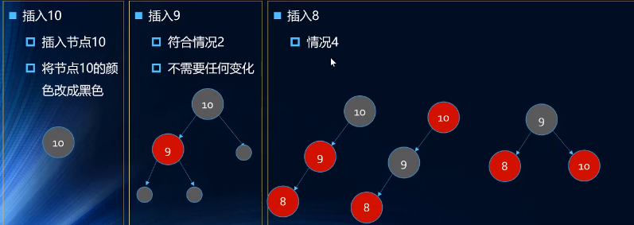
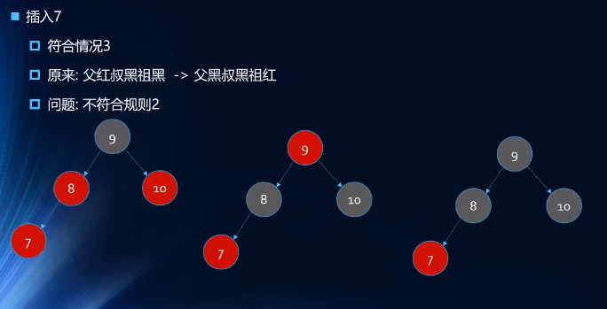
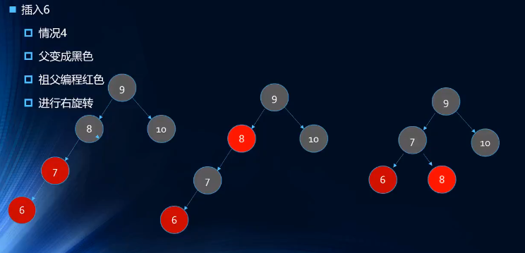
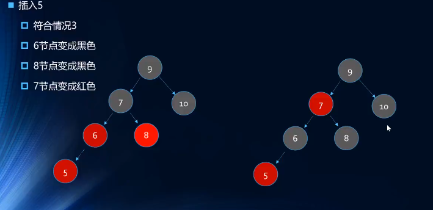
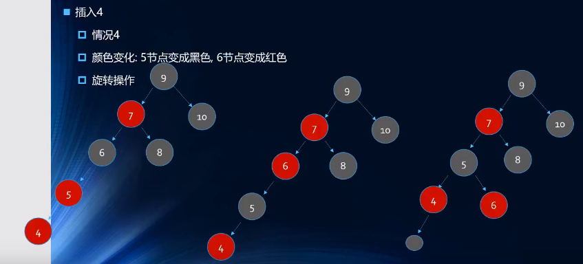
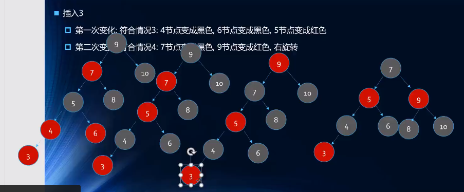
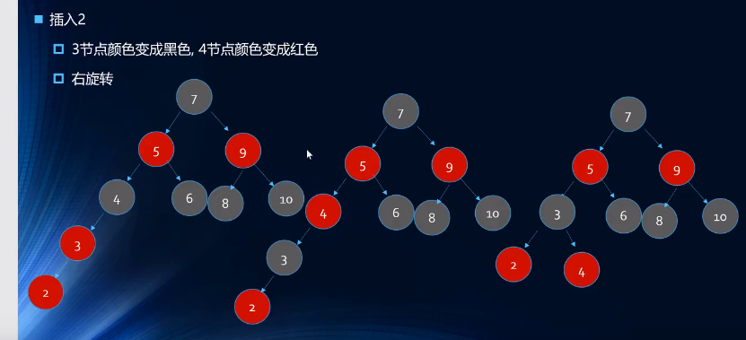
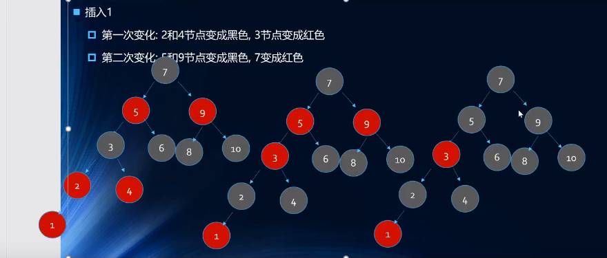